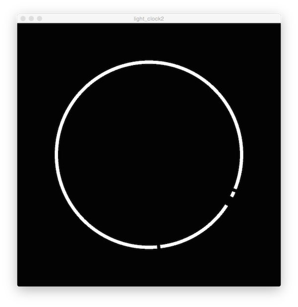

<!DOCTYPE html PUBLIC "-//W3C//DTD XHTML 1.0 Transitional//EN" "http://www.w3.org/TR/xhtml1/DTD/xhtml1-transitional.dtd">
<html xmlns="http://www.w3.org/1999/xhtml">
<head> 


<meta charset="utf-8" />

<title>Timeshare</title>
<link href="style.css" rel="stylesheet" type="text/css">
<script src="processing.min.js"></script>


</head>

<body>


<footer> 
<p>	Ever since wearables came into fashion I’ve wanted to create possibilities that are not achievable with an analog watch. While designing a watchface can be really fulfilling, there is not a lot of interaction to take advantage of the platform. That’s why I decided to extend this intimate solo act of checking the time to suit a couple.</p>

<p>	When you open the sketch you see a white circle that combines all the necessities to see what time it is, something that would not be possible with an analog exemplar. The large gap shows the hour, the slow-moving small gap marks the number of minutes, the fast-moving gap the number of seconds.</p>

<p>	In the background there are subtle circles. What is not very clear at first sight, is that these also show the time. If it is the case that a partner is abroad, it is often difficult to know what time it is in another time-zone, so this time is integrated in the watchface. There are four columns, each containing a digit, so if you see one circle in each column, it is 11:11, or to use 10:09, one circle in the first column and nine in the last. </p>

<p>	There are small interactions to be found in the User Interface. If the user touches the screen, or moves the mouse over the face, there are light variations to give feedback. What separates the application from other watchfaces is that you can send a message, a small token of remembering. When you check the time and tap the screen, or click the mouse over the watchface, a message is send which lights up the other watchface with little light-effects, so when the other person wearing the watch checks the time, the person can see that light message and can decide to send the signal back by tapping the screen. (Since the project is quite limited, I’ve decided to show one watchface in the sketch, I have added the 2 mockups in the documentation)</p>
</footer>

<footer>
	<h1> STEP ONE </h1>
	
	<p>Making the digital clock</p>
	<h1> STEP TWO </h1>
	
	<p>Making the light clock</p>
	<h1> STEP THREE </h1>
	
	<p>Bringing it all together</p>
	<h1> STEP FOUR </h1>
	
	<p>Adding interaction</p>
</footer>

<footer> 
	<a href="index.html">APPLICATION</a>
	&copy;2014 Twirlytimes
</footer>
</body>
</html>